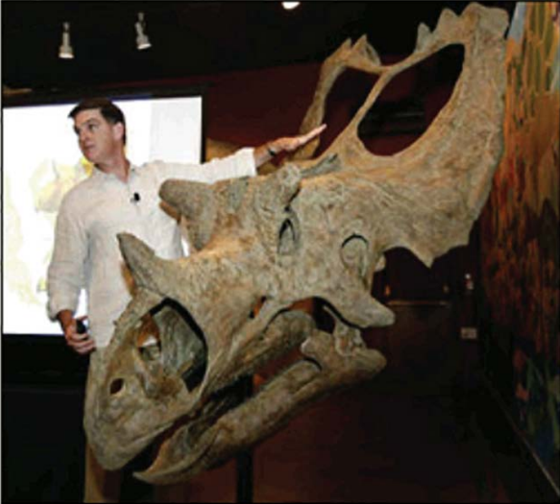
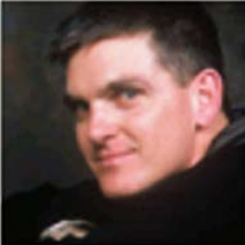

<!-- <!DOCTYPE html>
<html lang="en">

<head>
    <meta charset="UTF-8">
    <meta http-equiv="X-UA-Compatible" content="IE=edge">
    <meta name="viewport" content="width=device-width, initial-scale=1.0">
    <title>Practice</title>
     <link rel="stylesheet" href="xyz/xyz.css"> 
</head>
<style>
    header {
        padding: 0.5%;
        border-bottom: 3px solid brown;
        background-image: -webkit-linear-gradient(45deg, orange, white, orange);
    }

    header h1{
        color: brown;
        line-height: 0%;
    }

    header p {
    color: rgb(0, 0, 0);
    font-style: bold;
    font-size: 150%;
    }   
    
    header span {
    text-shadow: 2px 1px 1px brown;
    }

    header img { 
    margin-left: 2%;
    margin-right: 2%;
    width: 100px;
    height: 100px;
    float: left;
    }

    body{
    border-spacing: 0%;
    border: 4px solid brown;
    font-family: Verdana, Geneva, Tahoma, sans-serif;
    }

    #nav_menu ul {
    list-style-type: none;
    position: relative;
    }

    #nav_menu ul li {
    float: left;
    width: 20%;
    }

    #nav_menu ul ul {
    display: none;
    position: absolute;
    top: 100%;
    width: 20%;
    }

    #nav_menu ul ul li {
    float: none;
    position: relative;
    width: auto;
    display: block;
    }

    #nav_menu ul ul li ul {
    position: absolute;
    right: 100%;
    width: max-content;
    top: 0;
    }

    #nav_menu ul li.lastitem ul li ul {
    position:absolute;
    left: -20%;    
    width: max-content;
    top: 0;
    }

    #nav_menu ul li:hover>ul {
    display: block;
    }

    #nav_menu>ul::after {
    content: "";
    clear: both;
    display: block;
    }

    #nav_menu ul li a {
    text-align: center;
    display: block;
    width: auto;
    text-decoration: none;
    padding-top: 5%;
    padding-bottom: 5%;
    background-color: brown;
    color: white;
    font-weight: bold;
    }

    #nav_menu ul li.lastitem a {
    width: auto;
    left: auto;
    }

    #nav_menu ul li a:hover,
    #nav_menu ul li a:focus {
    color: yellow;
    }


</style>

<body>
    <header>
        
        <h1>San Joaquin Valley Town Hall</h1>
        <p><i>Celebrating our<span>75<sup>th</sup></span>Year</i></p>
    </header>
    <nav id="nav_menu">
        <ul>
            <li><a href="#">Home</a></li>
            <li><a href="#">Speakers</a>
                <ul>
                    <li><a href="#">Jeffrey Toobin</a></li>
                    <li><a href="#">Andrew Ross Sorkin</a></li>
                    <li><a href="#">Amy Chua</a></li>
                    <li><a href="#">Scott Sampson</a>
                        <ul>
                            <li><a href="#">September 2010</a></li>
                            <li><a href="#">February 2015</a></li>
                        </ul>

                    </li>
                    <li><a href="#">Carlos Eire</a></li>
                    <li><a href="#">Roman Tynan</a></li>
                </ul>
            </li>
            <li><a href="#">Luncheons</a></li>
            <li><a href="#">Tickets</a></li>
            <li class="lastitem"><a href="#">About Us</a>
                <ul>
                    <li><a href="#">Our History</a></li>
                    <li><a href="#">Board of Directors</a></li>
                    <li><a href="#">Past Speakers</a>
                        <ul>    
                            <li><a href="#">2014</a></li>
                            <li><a href="#">2013</a></li>
                            <li><a href="#">2012</a></li>
                        </ul>
                    </li>
                    <li><a href="#">Contact Information</a></li>
                </ul>
            </li>
        </ul>
    </nav>
    <main>
        <aside>
            <h2>Our Mission</h2>
            <p>San Joaquin Valley Town Hall is a non-profit organization that is run by an all-volunteer board of
                directors. Our mission is to bring nationally
                and internationally renowned, thought-provoking speakers who inform, educate, and entertain our
                audience! As one or our members told us:</p>
            <br>
            <p><i>"Each year I give a ticket package to each of our family members. I think of it as the gift of
                knowledge. and that is priceless."</i></p>
            <h3>peaker of the Month</h3>
            <div>
                <h2>Fossil Threads in the Web of Life</h2>
                <b>February Scott Sampson</b>
                
                <p>What's 75 million years old and
                    brand spanking new? A teenage
                    Utahceratops! Come to the
                    Saroyan, armed with your best
                    dinosaur roar, when Scott
                    Sampson, Research Curator at the
                    Utah Museum of Natural History,
                    steps to the podium. Sampson's
                    research has focused on the
                    ecology and evolution of late
                    Cretaceous dinosaurs and he has
                    conducted fieldwork in a number of
                    countries in Africa.</p>
                <p>Scott Sampson is a Canadian-born paleontologist 1,vho received his Ph.D.
                    in zoology from the University of Toronto. His doctoral work focused on
                    two new species of ceratopsids (horned dinosaurs) from the Late
                    Cretaceous of Montana, as well as the gro\Nth and function of certopsid
                    horns and frills.</p>
                <p>Following graduation in 1993, Sampson spent a year working at the
                    American Museum of Natural History in New York City, followed by five
                    years as assistant professor of anatomy at the New York College of
                    Osteopathic Medicine on Long Island. He arrived at the University of Utah
                    accepting a dual position as assistant professor in the Department of
                    Geology and Geophysics and curator of vertebrate paleontology at the
                    Utah Museum of Natural History. His research interests largely revolve
                    around the phylogenetics, functional morphology, and evolution of Late
                    Cretaceous dinosaurs. </p>
                <p>In addition to his museum and laboratory-based studies, Sampson has
                    conducted paleontological work in Zimbabwe, South Africa, and
                    Madagascar, as well as the United States and Canada. He 1,vas also the
                    on-air host for the Discovery Channel's Dinosaur Planet and recently
                    completed a book, Dinosaur Odyssey: Fossii Threads in the Web of Life,
                    which is one of the most comprehensive surveys of dinosaurs and their
                    worlds to date. </p>
            </div>
            <h2>Our Ticket Packages</h2>
            <ul>
                <li>Season Package: $95</li>
                <li>Patron Package: $200</li>
                <li>Single Speaker: $25</li>
            </ul>
        </aside>
        <section>
            <h1>Guest speakers</h1>
            <h3>October</h3>
            <a href="#">Jeffrey Toobin</a></br>
            
            </br>
            <h3>November</h3>
            <a href="#">Andrew Ross Sorkin</a></br>
            
            </br>
            <h3>January</h3>
            <a href="#">Amy Chua</a></br>
            
            <h3>February</h3>
            <a href="#">Scott Sampson</a></br>
            
            </br></br>
            <a href="#">Return to Home page</a>
        </section>
    </main>
    <footer> &copy; 2015, San Joaquin Valley Town Hall, Fresno, CA 93755
    </footer>
    </body>
    </html> -->

    <!DOCTYPE html>
    <html lang="en">
    <head>
        <meta charset="UTF-8">
        <meta http-equiv="X-UA-Compatible" content="IE=edge">
        <meta name="viewport" content="width=device-width, initial-scale=1.0">
        <title>Document</title>
    </head>
    <body>
        <table width="45%" border="5">
            <tr>
                <td></td>
                <td></td>
                <td></td>
                <td></td>
                <td></td>
            </tr>
            <tr>
                <td colspan="3"></td>
                <td colspan="2" rowspan="2"></td>
            </tr>
            <tr>
                <td colspan="3"></td>
            </tr>
        </table>
    </body>
    </html>